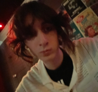

From kindergarden to grade 5 I went to Dr. David Suzuki. Then from grade 6 to 10 I went to Maranatha, then from grade 11 to grade 12 I went to riverside highschool. Next I went to St. Clair for prehealth, the finally I started computer programming at St. Clair. I had to chang from Pre-Health Sciences becuase I was struggling to keep up with the course material and I was failling classes.
For as long as I can remember I have had an interest in computer science. My first time playing around with computers was using an arduino to conrol a light plced inside of a pumpkin for halloween using a motion sensor. Ever since I have had a burning passion for technology.
I was born in Windsor Ontario, I still live there! I origionally lived in a house closer to the river but I moved down closer to tecumseh road.
In the east side of windsor where I live it is a lot calmer than downtown. People say windsor is so unsafe but I usually feel safe even going out at night alone when I'm in east windsor.
I have 6 people in my family: Two brothers, one sister, and both parents.
One of my brothers and my sister are younger while I have an older brother too. My oldest sibling is in university 3rd year, while my younger brother and sister are still in elementery school.